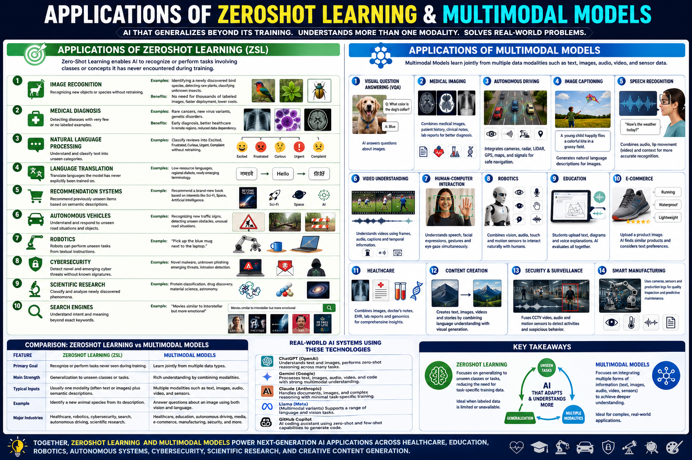

Explore how zero-shot and multimodal AI power real-world systems — from medical diagnosis to autonomous driving.
Zero-Shot Learning (ZSL) and multimodal AI combine vision, language, and audio to build systems that generalize beyond their training data. This guide covers 10 key application domains — image classification, cross-modal retrieval, VQA, medical diagnosis, autonomous driving, and more — with practical code examples, architecture breakdowns, and a comprehensive self-assessment quiz for the CGAI exam.

Image ClassificationObject DetectionText PromptsSemantic EmbeddingsMedical, VQA,Retrieval, Driving📊 ZSL & multimodal applications — vision-language models powering classification, retrieval, and reasoning across modalities
Classify images into categories never seen during training by leveraging semantic descriptions (attributes, word vectors, or text prompts).
Search images using text queries (or vice versa) in a shared embedding space. Powers Google Images, stock photo search, and e-commerce.
Answer natural language questions about images by fusing visual and textual representations. BLIP, LLaVA, and GPT-4V are state-of-the-art.
Diagnose rare diseases and detect anomalies in medical images for conditions with no training examples. Uses attribute-based or text-prompt ZSL.
Recognize human actions in videos that were never seen during training. Combines temporal visual features with action class embeddings.
Large language models extended with vision encoders enable open-ended reasoning about images, diagrams, and documents.
Detect rare or unexpected objects on the road (debris, animals, construction) using zero-shot object detection with vision-language models.
Jointly process audio and video for tasks like speech recognition, music classification, and audiovisual event localization.
Predict sentiment from video by combining facial expressions (visual), tone of voice (audio), and spoken words (text) in a fused model.
Generate images from text descriptions using diffusion models guided by multimodal embeddings. Stable Diffusion, DALL-E, and Midjourney use CLIP text encoders.
Modern ZSL and multimodal systems use dual-encoder or fusion-based architectures that project different modalities into a shared embedding space for zero-shot transfer.
Understanding how modalities are aligned and fused is central to building effective ZSL and multimodal systems.
Separate image and text encoders produce independent embeddings. Fast retrieval via precomputed embeddings; best for classification and search.
Cross-attention between vision and language tokens enables deeper reasoning. Better for VQA, captioning, and detailed visual understanding.
Training multimodal models requires large-scale contrastive learning with careful batch construction and data curation.
Train on millions of (image, text) pairs using symmetric InfoNCE loss. The large batch size provides abundant negative examples.
Multimodal models need diverse, high-quality paired data. Web-scraped alt-text (LAION, COYO) is standard for pretraining.
Zero-shot accuracy varies dramatically with prompt wording. Prompt ensembles average over multiple templates for robust predictions.
Stage 1: Train a Q-Former to bridge frozen vision encoder and frozen LLM. Stage 2: Fine-tune on instruction-following data.
Key techniques to prevent overfitting and improve zero-shot generalization in multimodal learning.
The learnable temperature τ in contrastive loss controls the concentration of the similarity distribution. Critical for calibration.
Randomly drops one modality during training to prevent the model from over-relying on a single modality. Improves robustness.
Embeddings are L2-normalized to the unit sphere. Weight decay on projection layers prevents overfitting to training class distribution.
Large contrastive batches (32K+) need gradient clipping and careful LR warmup to prevent training instability.
A minimal CLIP-style dual-encoder implementation for zero-shot image classification. All key hyperparameters annotated.
⬆️ Minimal CLIP-style dual encoder. Dual-encoder architecture + symmetric InfoNCE loss + temperature-scaled cosine similarity for zero-shot classification.
| # | Application | Key Architecture | Key Technique | Benchmark / Dataset |
|---|---|---|---|---|
| ① | ZSL Image Classification | CLIP / ALIGN dual encoder | Cosine similarity + prompt engineering | ImageNet (zero-shot) |
| ② | Cross-Modal Retrieval | Dual encoder + FAISS indexing | Precomputed embeddings + ANN search | COCO, Flickr30K |
| ③ | Visual QA | BLIP-2 / LLaVA (fusion) | Cross-attention + LLM decoding | VQA v2, GQA |
| ④ | Medical Diagnosis | CLIP + domain prompts | Text-prompt-based ZSL classification | CheXpert, MIMIC-CXR |
| ⑤ | Action Recognition | VideoCLIP / InternVideo | Temporal pooling + text alignment | Kinetics-400, UCF-101 |
| ⑥ | Multimodal LLMs | LLaVA / GPT-4V | Vision encoder → projection → LLM | MMBench, MM-Vet |
| ⑦ | Autonomous Driving | OWL-ViT / Grounding DINO | Open-vocabulary object detection | nuScenes, Waymo |
| ⑧ | Audio-Visual Learning | ImageBind (6 modalities) | Joint embedding via image alignment | AudioSet, VGGSound |
| ⑨ | Sentiment Analysis | Multimodal transformer fusion | Trimodal cross-attention (T+A+V) | CMU-MOSEI, MOSI |
| ⑩ | Text→Image Generation | Stable Diffusion / DALL-E | CLIP text encoder + diffusion UNet | COCO FID, DrawBench |
Separate encoders, shared embedding space
Cross-attention between modalities
Choose based on your task:
| Feature | CLIP (Dual-Encoder) | BLIP-2 (Q-Former) | LLaVA (Projection) |
|---|---|---|---|
| Image Encoder | ViT (frozen in some variants) | ViT (frozen) | CLIP ViT (frozen) |
| Text/LLM | Transformer text encoder | Frozen LLM (OPT/FlanT5) | Vicuna/LLaMA (fine-tuned) |
| Bridge | Shared embedding space | Q-Former (learned queries) | Linear projection layer |
| Retrieval | ✅ Fast (pre-indexed) | ❌ Per-query computation | ❌ Per-query computation |
| Best For | Classification, search | VQA, captioning, retrieval | Visual chat, reasoning |
Test your knowledge with 25 questions covering zero-shot learning, multimodal architectures, and real-world applications.